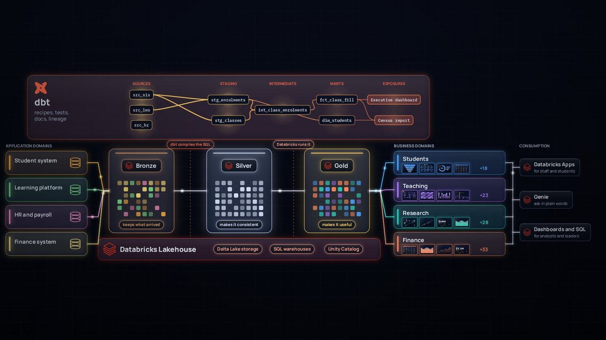

Learning Data
How data really moves, and why meaning matters
Short, visual explanations of modern data platforms: clear enough for someone starting out, rigorous enough for data engineers. We begin with one enrolment at a fictional university and follow it all the way to a decision.

▶ Play the film · 6 minThe Inner Life of Data
A six-minute film with narration, music and sound. It shows how data is captured in the systems where it's born, refined through bronze, silver and gold with dbt on Databricks, given meaning through a shared conceptual model, and shared without making copies.
Chapters
The making of: a learning journey
How the film went from a question about analogies to a finished, narrated film in two days, made in conversation with Claude, an AI model by Anthropic. The story covers what we explored, what we argued about, what went wrong, and what we learned.
Explored
Rivers, libraries, pipes and the human body; four style boards; and why light carrying pictures won.
Discussed
How each component really works: events, zero-copy, dbt layers and tests, data products and exposures.
Pushed back
Precision, design and plain errors, from "there is no better light" to tiles that looked like napkins.
Learned
Thirteen lessons for explaining data platforms, and for making media as code.
Coming next
Learning paths
Guided routes through the ideas in the film, one topic at a time.